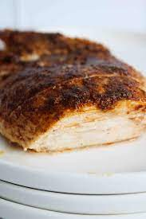

Air Fryer Blackened Chicken

So Good, It'll Make You Lick Your Fingers
Make chicken that tastes just as good off the grill with less of the frill!
Ingredients
- 2 (12 ounce) skinless, boneless chicken breast halves
- 2 teaspoons paprika
- 1 teaspoon ground thyme
- 1 teaspoon cumin
- ½ teaspoon cayenne pepper
- ½ teaspoon onion powder
- ½ teaspoon black pepper
- ¼ teaspoon salt
- 2 teaspoons vegetable oil
- Combine paprika, thyme, cumin, cayenne pepper, onion powder, black pepper, and salt together in a bowl. Transfer
spice mixture to a flat plate.
- Rub oil over each chicken breast until fully coated. Roll each piece of chicken in blackening spice mixture,
making sure to press down so spice sticks on all sides. Let sit for 5 minutes while you preheat the air fryer.
- Preheat an air fryer to 360 degrees F (175 degrees C) for 5 minutes.
- Place chicken in the basket of the air fryer and cook for 10 minutes. Flip and cook an additional 10 minutes.
Transfer chicken to a plate and let rest for 5 minutes before serving.